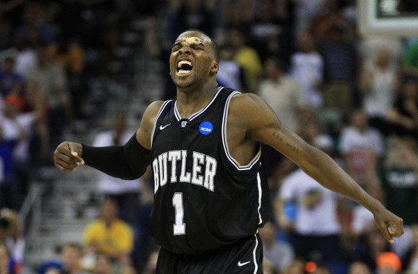

Who's the best drafter?
Part II - Down with BPP
 by Shaquille 'Shaq' O'Neal
by Shaquille 'Shaq' O'Neal
March 2020
Springfield, MA
Fresh off a national championship appearance, the 2011 Butler Bulldogs looked like an NIT team for the first three months of the season, a stretch culminating in three straight Horizon league losses. The low point came on February 3 when the Bulldogs allowed Youngstown St., 1-10 in conference play at the time, a 10-0 closing run for a two-point victory.
We may never know what was said on that long bus ride home from Ohio, but we do know it was productive. Butler swept their remaining regular season slate, then grabbed the Horizon auto-bid on the road against the Milwaukee Panthers. Nevertheless, it’s hard to fault the tournament committee for slotting the 23-9 Bulldogs as an 8 seed; harder still to fault you for skipping over Butler in the Player Pool draft that year.
Led by junior Shelvin Mack, Butler once again reached the national championship game, where they fell to Kemba Walker (and a poorly fed and uncompensated Shabazz Napier), their first loss since that nightmare in Youngstown two months prior. Mack’s 122 tournament points are good for seventh-best in the spreadsheet era and by far the highest total for an undrafted player. The 2010 version of Shelvin Mack currently stands as the fifth best undrafted player, with 92, making the him the most disrespected player in Pool history.
The 2011 draft is a mark of shame on the Pool, as just one of your 64 picks exceeded 122 (Kemba Walker’s Player Pool record of 141). Only Bryan was able to make the best pick possible that year. What about other years? How many of your picks go on to score more points than all other players still available at the time? I’ve scoured the sheets and marked the times when you made the Best Pick Possible (BPP®).
| 2009 | 2010 | 2011 | 2012 | 2013 | 2014 | 2015 | 2016 | 2017 | 2018 | 2019 | Total | |
|---|---|---|---|---|---|---|---|---|---|---|---|---|
| Adam | 1 | 1 | 1 | 1 | 1 | 5 | ||||||
| Alex | 2 | 1 | 1 | 4 | ||||||||
| Farach | 1 | 1 | 2 | |||||||||
| Lloyd | 1 | 1 | 1 | 3 | ||||||||
| Bryan | 2 | 1 | 2 | 1 | 1 | 7 | ||||||
| James | 1 | 1 | 1 | 2 | 4 | |||||||
| Josh | 1 | 1 | 1 | 1 | 2 | 6 | ||||||
| Rob | 1 | 1 | 1 | 3 |
As you can see, making the BPP® is something of a rarity; 2011 wasn’t such an anomaly after all. If outperforming your draft slot is a sign of drafting skill, then perhaps so is notching BPPs.
Or perhaps it’s just dumb luck, not unlike my free throw conversions.